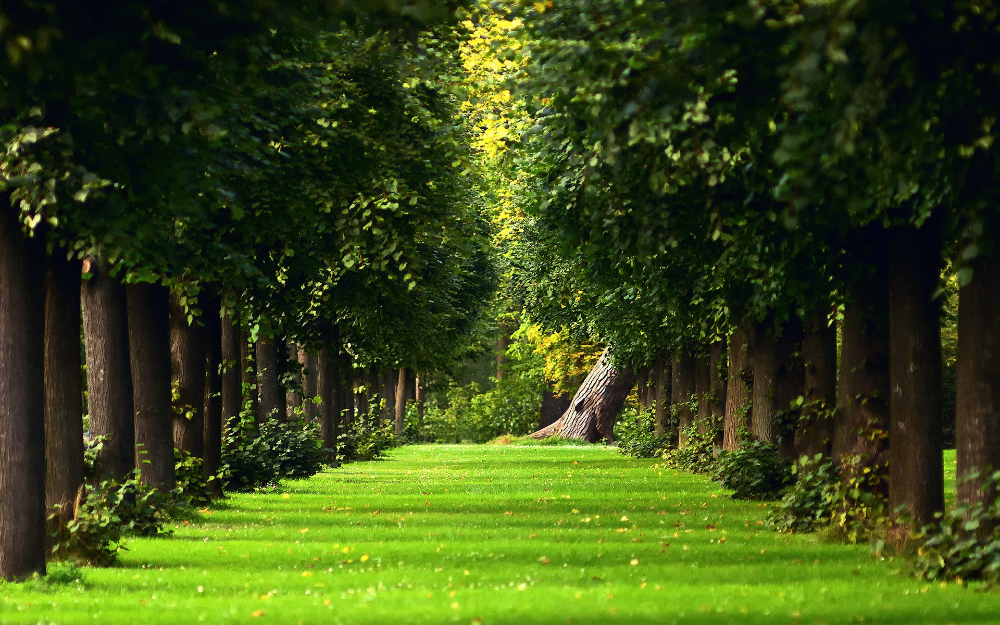

Уголки природы в каменных джунглях
Шум и гам большого города могут утомить как приезжих, так и коренных жителей столицы. Иногда хочеться побродить под кронами деревьев, насладиться созирцанием глади пруда или быстрого бега реки, не отвлекаясь на шум шоссе и запах бензина. Но ехать куда-то за город кажеться слишком утомительным. Тогда вашь вз может обратиться на островки природы, разбросанные по городу - парки.
Но встает вопрос - куда пойти, ведь их так много. На нашем сайте мы представим наиболее знаменитые парки Москвы. Здесь вы можете ознакимиться с его местоположением, особенностями и достопримечательностями.